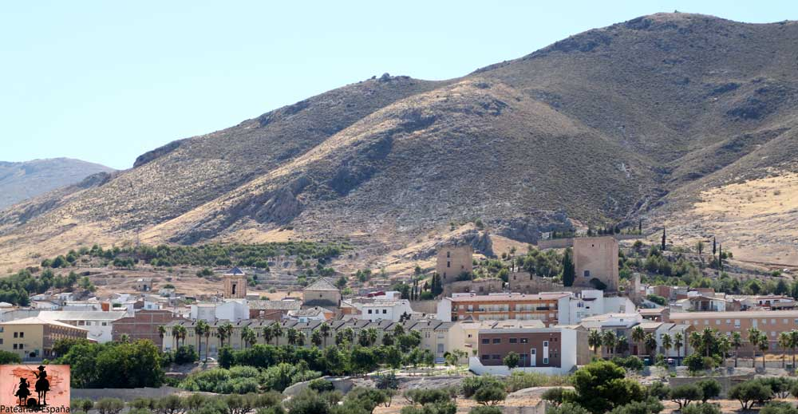
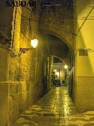
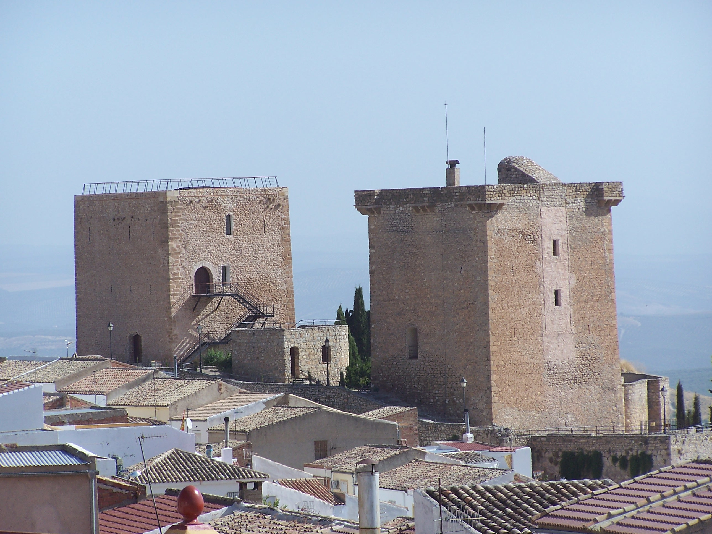
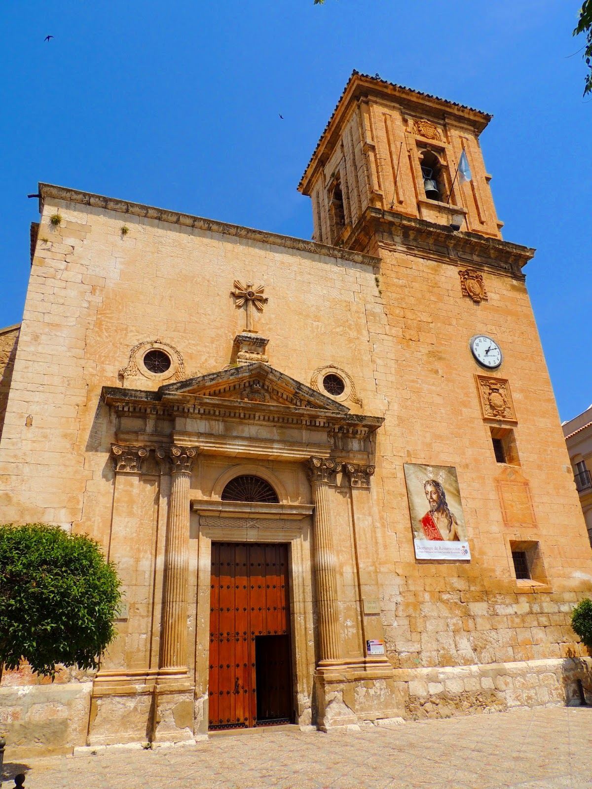
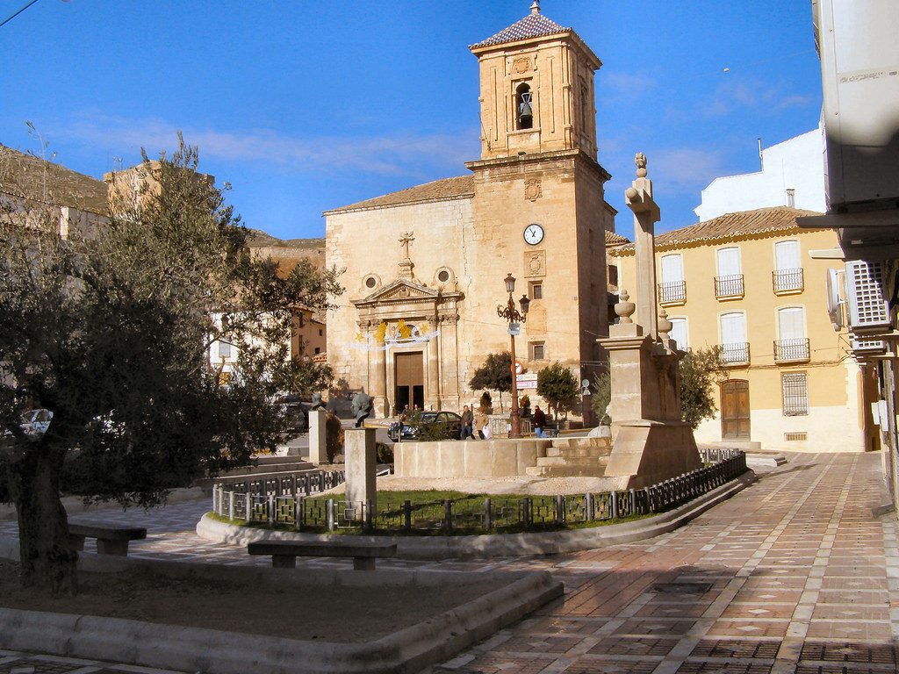

The Jódar Historical-Artistic Complex encompasses the surroundings of the Church of the Assumption, the Castle and the streets: Juan Martín, Alhorí, Isabel la Católica, Plaza de España, Plaza del Castillo, Conde Salvatierra and Alcázar. In them you can see traditional buildings of the region and its peculiar urban layout. All this area was known in the sixteenth and seventeenth centuries as the Old Town.
Neighborhood of Andaraje

To the north of the city is the popular Barrio de Andaraje, which comes from the Arabic term mill wheel on which the arcaduces turn and which served to irrigate the nearby orchards. From the Plaza de San Marcos, where for centuries the hermitage of this name was next to the Puerta de las murallas, called Toledo. or of Baeza. In the center of the Plaza stands a calvary, on a slender column, with the Image of a Crucified One. We continue down Juan Martín Street interesting historicist houses of classicist style are built. In Plaza Don Manuel Agudo Gimena, known as Plaza del Pilón, there is an old laundry room where the well-known Fountain of the Place was located, marked by a beautiful history of love in the 14th century a beautiful love story.12
Until the end of the nineteenth century, the neighborhood was surrounded by the primitive walls, as well as various gardens and several marginal neighborhoods of caves: Barranco Hondo, El Pocico, or San Marcos. You can still visit some cave dwellings, in the Pocico area.
Callejuelas

Through the narrow streets, you can access the castle by the steep and typical staircase of Alhorí street (whose name means barn), with beautiful gardens. Passing the Air Gate of the twelfth century, remains of the city walls can be seen. One of the typical streets of the province, Isabel la Católica street opens under the arches of the buttresses of the Church.
Castle

In the historical core of the town a castle is preserved and documented in the year 860. However, it is known that the castle is based on the Iberian era, as evidenced by the inscriptions found in one of its ashlars, so it is considered for historical and documentary purposes, the oldest in Andalusia.
It was also the court and capital of a Taifa of its own and of Cora de Jaén for many years, being Swaudar its capital. It has two tribute towers, one of Arab origin and another raised by the Christians, although the adarves and walls around it are almost gone. This fortress was the residence of the lords of the town until 1870.
In 1619 King Philip III created the Marquesado de Jódar, the castle being the residence of the Marquis since 1670, the castle had a chapel dedicated to the Immaculate Conception, large stables with stone stables, and a corridor with a large cellar. In this castle the residence of the lords of the town continued until 1870. During the French occupation it was a military barracks, being its last function as a cholera hospital at the end of the last century.
One of the towers, the South Tower, was restored in the eighties and is currently the Reception and Interpretation Center of the Sierra Mágina natural park. It was declared a historical monument in 1985. In the year 2013 the North Tower was restored, enabling it to recreate and publicize the history of the Castle and the municipality.
Parish of La Asunción

With a classical Renaissance façade, from the Vandelvirian school, it is the main temple of the town, dating from the late 16th century, when it was built on the site of an old church of Santa María, which was on the main mosque . Of great proportions, it has a Latin cross plan with chapels between the buttresses. Cannon vault roof and dome on a pechina on the transept. The cruise, the presbytery and the main chapel are from 1775.
The beautiful tower is the work of Juan de Aranda (1640) decorated with episcopal shields. The cover is neoclassical at the end of the eighteenth century, the work of Manuel Caballero, one of the best in the province for its graceful proportions.
Embedded in the wall, is the valuable 'inscription Ibero-Latin Galdur' mythological city and ancient cradle of Jódar, is from the first century. C. This practice-well known in works of Renaissance design-served to enhance classic antiquity, where this architectural style found its roots.
Spain Square

Conserva bellos edificios historicistas en calles emblemáticas, de estilo clasicista. Una de estas edificaciones es la conocida como Casa de los Mesa de 1875, conserva bellos escudos heráldicos y alero con escenas de dragones y peces. La fachada del Ayuntamiento centra la Plaza en estilo regionalista del año 1927, con columnas salomónicas y bella galería arcada para el Salón de Sesiones.
Other monuments of interest
Church-Sanctuary of the Christ of Mercy
It was built in 1700 on the Hermitage of Santa Isabel. It is of a single ship. There is venerated a magnificent carving of the Christ of Mercy of the sixteenth century. It also highlights a baptismal font of 1660.
Hermitage of Our Lady of Fatima
Located in the neighborhood of Fatima, south of the urban core. In the year 1960, the diocese of Jaén approved the act for the construction of the Parish. The hermitage was built with funds from the villagers. In its interior the majestic carving of the Virgin of Fatima is worshiped, who procession every May 13 through the streets of his parishioners.
Hermitage and historical cemetery of San Sebastián
The nineteenth-century Municipal Cemetery of San Sebastián, is considered one of the best in the province, preserving interesting pantheons of Italian sculptors of the late nineteenth century. Its construction dates from 1893 and in the center, among gardens and centenary cypresses, is the Ermita de San Sebastián, made of stone according to Justino Flores' design, as well as the entire enclosure, with an elegant belfry, inside it is a magnificent Dolorosa from Córdoba Cerrillo, as well as other Images. Interesting are some works of ironwork and marble works.
Hermitage of San Isidro Labrador
Built in a beautiful place, in 1955.
House of Canon Arroquia
In front of the church of Misericordia. It is a house of oriental style, and has a beautiful andalusian patio, unique in the province.
Atalaya de los Pinares
It is one of the multiple towers of the lookout system that surrounded the city until the middle ages. This monument is in poor condition.
Marcón Mill and El Cañaveral stream
Flour mill built in 1801, construction that is conserved of masonry with a semicircular brick arch. Around it there is a place of great beauty with the creek of the Cañaveral, one of the biggest adelfales of the province.
Flour factory Sponsorship
At the Jódar-Úbeda station, we have an industrial jewel of the 19th century, the remains of the El patrocinio factory, with its huge stone façade, its old machinery and its English-style windows. It had an annexed chapel. It has suffered a fire in 2012 that has ruined it.